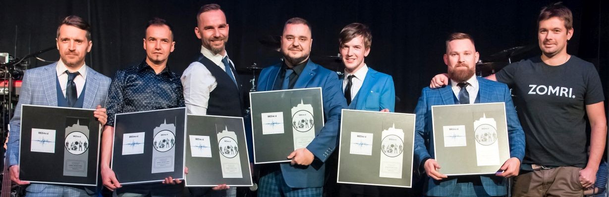
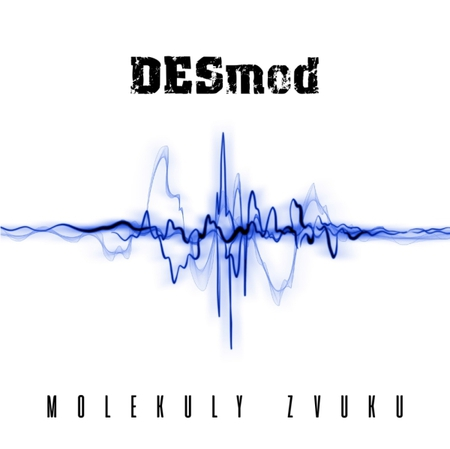
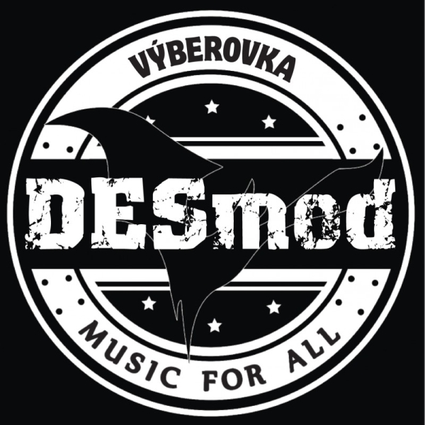
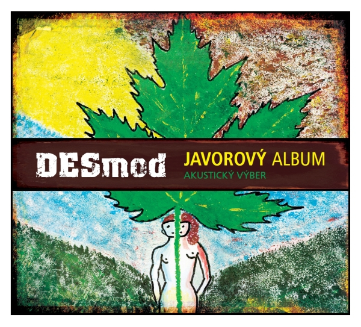
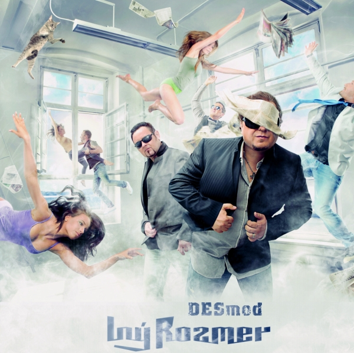
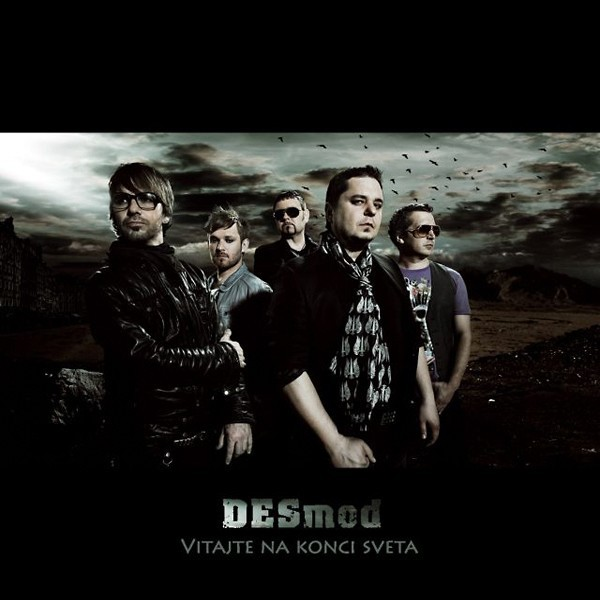
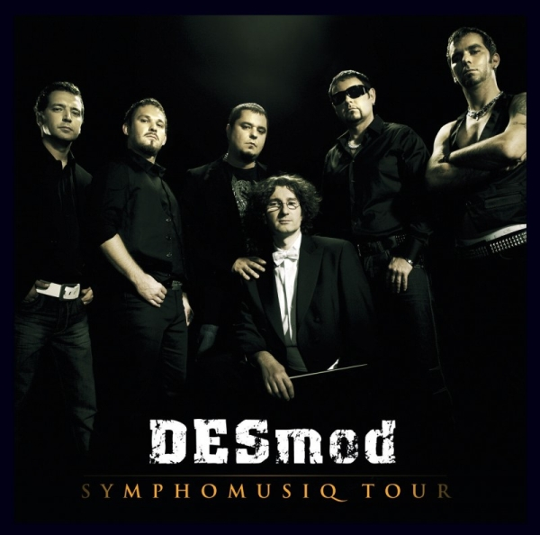
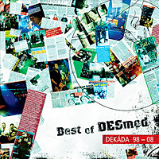
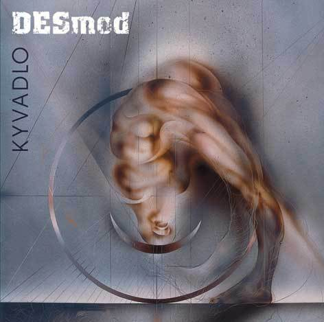

Diskografia

MOLEKULY ZVUKUDesmod │ 2017
- Molekuly zvuku (intro)
- Čierna skrinka
- Nevrav mi aký som
- Chýbanie
- Za všetkých básnikov
- Čierna ovca rodiny
- Správny text
- Vŕba
- Plny dom
- Anjel
- Máj

VÝBEROVKAUniversal Music │ 2013
- Mráz do žíl
- To nie je možné
- Pár dní
- ...na tebe závislý
- Aby bolo jasné
- V dolinách
- Zhorí všetko čo mám
- Niekto ti to povie skôr než
- Kamenné ruže
- Čierna diera
- Zober ma domov
- Symfónia prázdna
- Lavíny
- Vyrobená pre mňa
- Vitajte na konci sveta
- Za tebou
- Zvukoprázdno
- Adrenalín stúpa
- Spočítaj
- Inzerát

JAVOROVÝ ALBUMSpinaker │ 2013
- Dážď
- Kyvadlo
- Otvorím Ťa dokorán“ /DESmod feat. Marta Jandová
- Mám asi pravdu /DESmod feat. Jiří Stivín
- Kamenné ruže
- Zhorí všetko čo mám
- Mráz do žíl (Desmod feat. Ivan Tásler)
- Dobrý nápad (Desmod feat. Jiří Stivín)
- Možno mi odpustíš
- Strom (Desmod feat. Marie Rottrová)
- Úplné bezvetrie (Desmod feat. Jiří Stivín)
- Zober ma domov
- Marry (Desmod feat. Jiří Stivín)
- Zostane ticho (Desmod feat. Miro Šmajda)
- Posledná (Desmod feat. Close Harmony Friends)

INÝ ROZMERUniversal │ 2011
- Modlitba
- Zvukoprázdno
- Ona a on
- I would
- 4 ročné trápenia
- Anonym
- Osie hniezdo
- Insane
- Neživá
- Hádaj
- Turn On the Light

VITAJTE NA KONCI SVETAUniversal Music s.r.o. │ 2010
- Intro (MP3 ǀ text)
- Vitajte na konci sveta (MP3 ǀ text)
- Hviezda padá (MP3 ǀ text)
- Vojna slov (MP3 ǀ text)
- Varovný výstrel (MP3 ǀ text)
- Srdce vo formaldehyde (MP3 ǀ text)
- Za tebou (MP3 ǀ text)
- Nemusíš sa báť (MP3 ǀ text)
- Strom (MP3 ǀ text)
- Pandorina skrinka (MP3 ǀ text)
- Nové časy(MP3 ǀ text)
- Kráľovstvo nebeské (MP3 ǀ text)
- Posledná minúta (bonus) (MP3 ǀ text)

SYMPHOMUSIQ TOURUniversal Music s.r.o. │ 2009
- Na tebe závislý
- Mary
- Homosapiens
- Aby bylo jasné
- Mráz do žíl
- Adrenalín stúpa
- 100 rokov samoty
- Vodopád
- Zostane ticho
- Zober ma domov
- Symfónia prázdna
- Čierna diera
- Vyrobená pre mňa
- Niekto ti to povie skôr než ja
- Lavíny
- Možno mi odpustíš (bonus)

BEST OF DESMOD: DEKÁDA 98–08Columbia Records │ 2008
- Čierna diera (Kyvadlo, 2007)
- Zober ma domov (Kyvadlo, 2007)
- V dolinách (Uhol pohľadu, 2006)
- Zostane ticho (Uhol pohľadu, 2006)
- Niekto ti to povie skôr než ja (Uhol pohľadu, 2006)
- Zhorí všetko čo mám (Uhol pohľadu, 2006)
- Adrenalín stúpa (Uhol pohľadu, 2006)
- Kóma (Skupinová terapia, 2004)
- Aby bolo jasné (Skupinová terapia, 2004)
- Posledná (Derylov svet, 2003)
- 9 mm (Derylov svet, 2003)
- Homosapiens - Derylov svet (2003)
- Otvorím ta dokorán (Mám chuť..., 2001)
- Mám na to liek (Mám chuť..., 2001)
- Mráz do žíl (Mám chuť..., 2001)
- Umelý svet (Mám chuť..., 2001)
- Mary (001, 2000)
- Stroj (001, 2000)
- Je mi fajn (001, 2000)

KYVADLOUniversal Music Group │ 2007
- Kamenné ruže
- Kyvadlo
- Symfónia prázdna
- Čierna diera
- Správy vo flašiach
- Zober madomov
- Čiernobiela
- Úplné bezvetrie
- Zachráň sa kto môžeš
- Skúšam ti rozumieť
- Lavíny
- Labyrint
- Vyrobená pre mňa